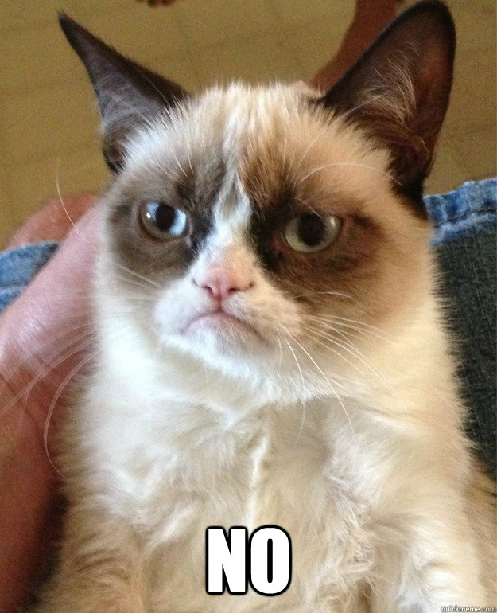

Curriculum Vitae
Laura Tran
Lebenslauf in Zahlen
2011 Abitur in Ba-Wü
2012 Gastronomie Flughafen Stuttgart
2013-2015 Ausbildung zur Fotografin
2015 bis jetzt freie Fotografin
2016 Kommunikationsdesign Studium an der HTW-Berlin
Eine Katze
Zwei Katzen
Drei Katzen
Vier Katzen
Fünf Katzen
"Cats are intended to teach us that not everything in nature has a purpose."
Mehr Bilder von mir
